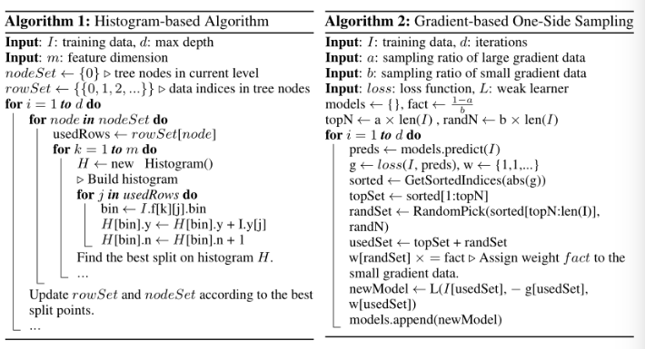

https://blog.csdn.net/niaolianjiulin/article/details/76574216
LGB阐释的很好的文章：https://blog.csdn.net/shine19930820/article/details/79123216
[toc]
Aggregation Model
blending(混合） and bagging（装袋）
aggreation model就是混合模型
blending: voting for classification
XGBoost vs GBDT vs LightGBM
GBDT -- 梯度提升，提升决策树，回归问题
本质模型为加法模型 基函数为决策树 迭代拟合标注和模型的残差来不断逼近损失函数最小化
以当前模型在L负梯度方向的值，作为残差的近似
XGB的特点
1） booster可以是gbtree也可以是linear model
- gbdt优化只用到一阶导数信息（负梯度），xgboost则对代价函数进行了二阶泰勒展开，同时用到一阶和二阶导数.同时支持自定义代价函数，只要函数可一阶和二阶求导 3） 更多的正则项 包含树的叶节点个数 4） shrinkage缩减和column_subsampling shrinkage缩减：类似学习速率 column_subsampling: 列抽样 5） split finding alg: xgboost还提出了一种可并行的近似approximate algorithm直方图算法Weighted Quantile Sketch，用于高效地生成候选的分割点 6）对缺失值的处理。对于特征的值有缺失的样本，xgboost可以自动学习出它的分裂方向。 稀疏感知算法 Sparsity-aware Split Finding 7）Built-in Cross-Validation： XGBoost allows user to run a cross-validation at each iteration of the boosting process and thus it is easy to get the exact optimum number of boosting iterations in a single run. This is unlike GBM where we have to run a grid-search and only a limited values can be tested. 8）
LGB
abtract
xgboost一个效率问题就是 对于每一个特征的每一个分裂点，都需要遍历全部数据计算信息增益 这一过程非常耗时
针对这一个问题，lgb提出
GOSS - gradient-based One-Side Sampling
GOSS会排除对entropy贡献小的instances.
EFB - Exclusive Feature Bundling(基于梯度的one-side采样和互斥的特征捆绑）
不损害分割点准确率，有效减少特征的数量
GBDT的缺点
GBDT缺点：**对于每一个特征的每一个分裂点，都需要遍历全部数据来计算信息增益。**因此，其计算复杂度将受到特征数量和数据量双重影响，造成处理大数据时十分耗时。
解决这个问题最直接的方法就是减少特征量和数据量但同时不影响精度。一个简单的做法就是根据数据权重采样来加速boosting的过程。由于gbdt没有样本权重不能应用，lgb提出两种新方法：
GOSS -- 通过采样降低样本数
GBDT虽然没有数据权重，但每个数据实例有不同的梯度，根据计算信息增益的定义，梯度大的实例对信息增益有更大的影响，因此在下采样时，我们应该尽量保留梯度大的样本（预先设定阈值，或者最高百分位间），随机去掉梯度小的样本。我们证明此措施在相同的采样率下比随机采样获得更准确的结果，尤其是在信息增益范围较大时
GOSS保留所有的梯度较大的实例，在梯度小的实例上使用随机采样。为了抵消对数据分布的影响，计算信息增益的时候，GOSS对小梯度的数据引入常量乘数。GOSS首先根据数据的梯度绝对值排序，选取top a个实例。然后在剩余的数据中随机采样b个实例。接着计算信息增益时为采样出的小梯度数据乘以(1-a)/b，这样算法就会更关注训练不足的实例，而不会过多改变原数据集的分布。
EFB -- 通过捆绑降低特征数量（主要是针对sparse)
虽然特征量比较多，但是由于特征空间十分稀疏，是否可以设计一种无损的方法来减少有效特征呢？特别在稀疏特征空间上，许多特征几乎是互斥的（例如许多特征不会同时为非零值，像one-hot），我们可以捆绑互斥的特征。最后，我们将捆绑问题归约到图着色问题，通过贪心算法求得近似解。
GBDT 复杂度分析
GBDT是一种集成模型的决策树，顺序训练决策树。每次迭代中，GBDT通过拟合负梯度（残差）来学到决策树。
学习决策树是GBDT主要的时间花销，而学习决策树中找到最优切分点最消耗时间
广泛采用的预排序算法来找到最优切分点，这种方法会列举预排序中所有可能的切分点。这种算法虽然能够找到最优的切分点，但对于训练速度和内存消耗上都效率低
另一种流行算法是直方图算法（histogram-based algorithm）。直方图算法并不通过特征排序找到最优的切分点，而是将连续的特征值抽象成离散的分箱，并使用这些分箱在训练过程中构建特征直方图，这种算法更加训练速度和内存消耗上都更加高效，lightGBM使用此种算法。
histogram-based算法
histogram-based算法通过直方图寻找最优切分点，其建直方图消耗O(#data * #feature)，寻找最优切分点消耗O(#bin * # feature)，而#bin的数量远小于#data，所以建直方图为主要时间消耗。如果能够减少数据量或特征量，那么还能够够加速GBDT的训练。


GOSS 过程
- 首先根据数据的梯度来训练将许排序
- 保留top a个数据，作为数据子集A
- 对于剩下的数据，随机采样获得大小为b的数据子集B
- 最后计算信息增益